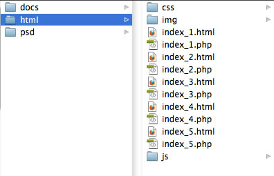
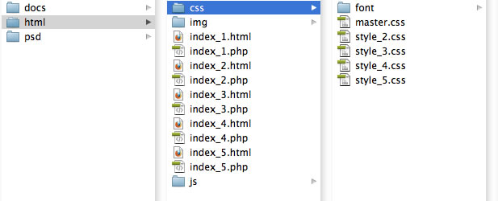
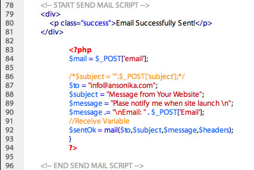

“ESCAPE CountDown” Documentation by “Ansonika” v1.0
“ESCAPE CountDown”
Created: 28/06/2011
By: Ansonika
Email: info@ansonika.com
Website/support: www.ansonika.com
Thank you for purchasing my theme. If you have any questions that are beyond the scope of this help file, please feel free to email via my user page contact form here. If you are happy with the theme, please TAKE A MOMENT TO RATE IT on the ThemeForest website. Thanks so much!
Table of Contents
- HTML Structure
- CSS Files and Structure
- Customize the template
- PHP contact form
- JavaScript
- PSD Files
- Sources and Credits
A) HTML Structure - top
You'll find all the html files inside the folder HTML. Here the structure of the foldee. IF YOU WONT TO USE THE WORKING FORM, USE THE PHP VERSION.

B) CSS Files Structure and basic modfication - top
The css files inside the css folder.

- master.css (contains all of the specific stylings for the page)
- the other css files contains all the color/style variations (style_2.css = acqua)
- font folder @font-face DIN definition
Change the color of the numbesr
Open master.css and find this class
.countdown_amount {
font-size:75px;
color:#4f2936;
font-family: 'DINBlackRegular';
}
Here if you need you can change also the size of the numbers...for example if the days are 3 numbers....you have to reduce the size and adjust the position of the number inside the circles by changing this padding here
display: block;
float: left;
padding-top:55px;
text-align: center;
background:url(../img/circle.png) no-repeat center top;
height:137px;
margin-bottom:30px;
}
Add your personal style to the counter or chose one of five
Take on the head of the page master.css that contain the main styles
<link href="css/master.css" rel="stylesheet" type="text/css"/>
then put after master.css this css file or yours
<link href="css/style_2.css" rel="stylesheet" type="text/css"/>
Modify the tipography
Find th comment line /* TIPOGRAPHY ======
.
Here you'll find all the HEADINGS. Here an example of main heading:
Change the logo
Open the desired psd edit and save the new logo in PNG 24 format with the name logo.png; rewrite the old one.
Then in the page
<div id="logo"><img src="img/logo.png" width="304" height="83" alt="Your Logo" /></div><!-- Your logo-->
C) Customize the template - top
Change any the text
Find any line starting with the interested comment and edit the text as you need, VERY SIMPLE!!!
<!-- Start newsletter form -->
< !-- start footer -- >
Change the date of the counter
Fin this comment line <!-- JQUERY COUNTDOWN -->, then this
<script type="text/javascript">
$(function () {
var austDay = new Date();
austDay = new Date(austDay.getFullYear() + 1, 8-12, 01);
$('#defaultCountdown').countdown({until: austDay});
});
</script>
Where the 8-12 is the month and 01 the day. Adjust as you need.
Localization of the counter
If you wont to use the counter with your language
simply call the proper js language version inside the js/countdown folder. Here an example:
<!-- JQUERY COUNTDOWN -->
<script type="text/javascript" src="js/countdown/jquery.countdown.js"></script>
<script type="text/javascript" src="js/countdown/jquery.countdown-it.js"></script> (LOCALIZATION FILE)
<script type="text/javascript">
$(function () {
var austDay = new Date();
austDay = new Date(austDay.getFullYear() + 1, 8-12, 01);
$('#defaultCountdown').countdown({until: austDay});
});
</script>
Look here other options avalilable:
http://keith-wood.name/countdown.html
Change the color/style of the item
At the top of the page there is master.css that contain common style and the first yellow style. If you wont to change the style, simply add the desired color variation.
<link href="css/master.css" rel="stylesheet" type="text/css"/> (main styles)
<link href="css/style_2.css" rel="stylesheet" type="text/css"/> (color variation...in this case the Acqua one)
D) PHP contact form - top
The template uses a working contact form with the file contacts.php. Here the functions to send the email. The part you are interested is the following, where the line 87 you must write your email:
E) JavaScript - top
This theme use These Javascript.

- Jquery (https://ajax.googleapis.com/ajax/libs/jquery/1.4.4/jquery.js) inline the page
- Jquery CountDown
- Jquery form validate (jquery.validate.js)
F) PSD Files - top
All the psd are layered and clearly groupped. You'll get 5 color variations.

G ) Sources and Credits - top
I've used the following images, icons or other files as listed.

Once again, thank you so much for purchasing this theme and please take a moment to rate it.
As I said at the beginning, I'd be glad to help you if you have any questions relating to this theme. Please attach snapshots and site url and any other kind of information so I can provide a full feedback.
The emails are checked one time a day, Monday to Friday. You will receive an answer within 24-48 hours (working days).
Please, send an email to info@ansonika.com with subject [ThemeForest Support] Template name
Ansonika